Access for All
A New Generation's Challenges on the California Coast
A report on research by Jon Christensen, University of California, Los Angeles, and Philip King, San Francisco State University
What the Coast Means to Californians
And How Often They Visit
The vast majority of Californiansó90 percentósurveyed in a recent statewide poll told us that the condition of the ocean and beaches is important to them personally. And 77 percent said that they visit a beach or the coast of California at least once a year. Many come more often. One in four say that they visit the coast once a month or more, while another 38 percent visit several times a year. But 62 percent say that limited public access to the coast and beaches is a problem, and lack of affordable options for parking and overnight accommodations as well as limited public transportation to the beach are even bigger problems. In this interactive report, we explore California beachgoers' views of the coast and a new generation of challenges to access to the coast. And we offer recommendations for improving the coastal access guaranteed to all of us by our state constitution and the California Coastal Act.
California's public beaches and coastal parks are among the most popular public parks in the state. This map shows relative visitation rates to all of California's local, regional, state, and national parks‚Äîalong the coast and inlandówhich we estimated based on Instagram users who post photos from these parks and beaches.


 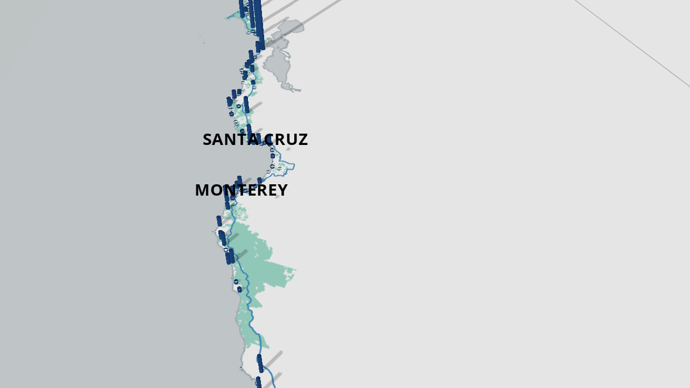
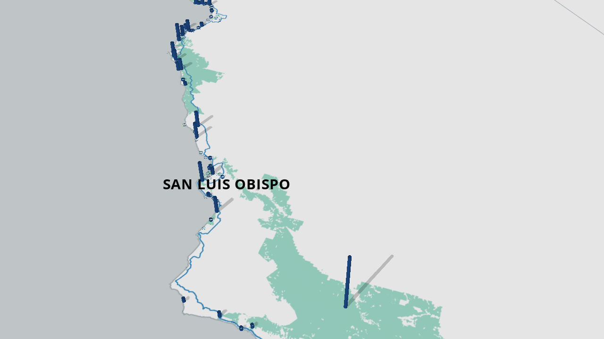
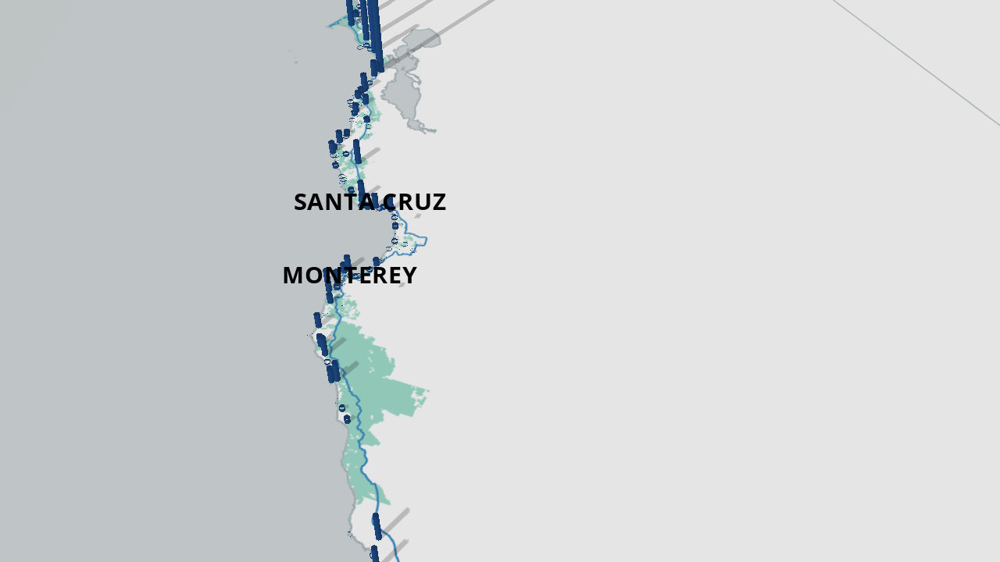
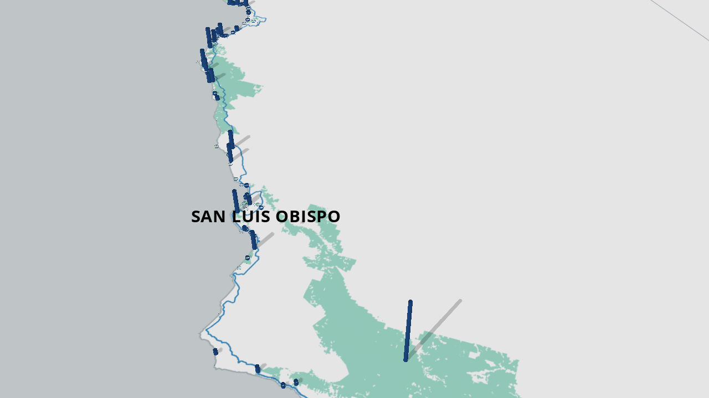


The California shoreline belongs to the people of California, as guaranteed by our state constitution. And the California Coastal Act states that "maximum access" to the California coast "shall be provided for all the people." There are XXX [TODO:calc #parks] public beaches and parks within the state's coastal zone. On this map, we've used data from Instagram users at those beaches and parks to estimate relative visitation rates along the coast.
I like the dramatic scene of waves crashing against rocky shores. I enjoy the rustic and ancient feeling that these beaches have, a reminder of a way of life a long time ago.

I love to run. So the beach is the place I go for running. It's also a great place to meet new people.

Since I was a kid, I've appreciated the sense of freedom playing on the beach, the ability to wander, and become immersed in the ocean ecosystem. I go to the beach with my family now, and we enjoy playing in the sand and looking into the tide pools.
A lot of people think a perfect beach is one in commercials with two people in the middle of nowhere on lounge chairs. But that's just a vacation. The perfect beach is one you can go to every day and there are lots of people there and it's alive.
Californians Love the Coast
Beach lovers are park lovers
The coast is central to the lives of most Californians. Nine out of ten people in our recent statewide survey told us the condition of the ocean and beaches is important to them personally, and three out of four visit the coast or a beach at least once a year, and many come much more often than that. The coast is a public resource and the California Coastal Act guarantees access for all of us. Preserving those connections for future generations is a crucial challenge for this generation of Californians.


 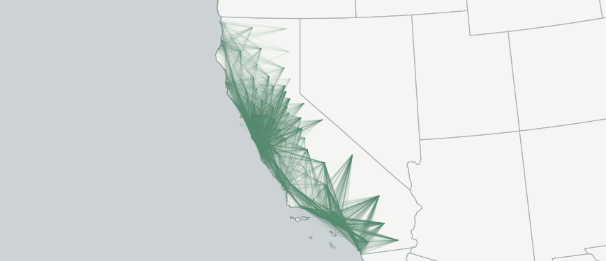
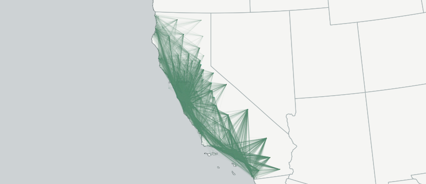
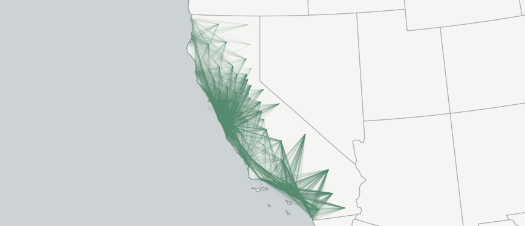
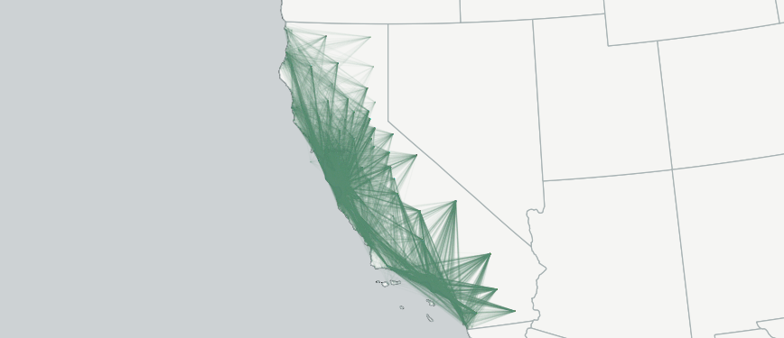


Californians Are Connected to the Coast
Beach lovers are park lovers. And park lovers are beach lovers. This map shows Instagram users who post photos from both inland parks and coastal parks and beaches, sharing their love of California's public spaces.
The percentage of people responding as "very" or "somewhat" important.
82.5% 94.2%What we want at the beach
The most important things at the beach for all Californians? According to our survey of beachgoers: clean sand, clean water, a place to relax and enjoy the scenery, and a place for kids to play.
The percentage of people who visit several times a year or more.
41.2% 73.8%How often we visit the coast
Californians who live farther away from the coast don't visit as often. Distance and time are big factors, along with the cost of staying overnight near the beach.
Access to the Coast
Concerted Efforts Have Preserved and Opened Up Access
Attempts by some property owners to block public access to the beach attract a lot of attention up and down the California coast. In recent years, the California Coastal Commission and the Coastal Conservancy have worked steadily through a backlog of barriers that impede access to the coast. Using negotiation, enforcement, and incentives for cooperation, they have opened up many access points. Still, much work remains to be done to ensure public beaches are accessible to the public all along the coast.
This graph shows accessways acquired by the Coastal Commissioned and opened to the public, along with accessways that have been acquired but are not yet open to the public.
This interacive map shows all of the access points currently open to the public along the California coast. You can use it explore access points to stretches of the coast that you'd like to explore.
Today's Access Issues
Beyond the Last Hundred Yards
Despite the coastal act's guarantee of access for all and ongoing efforts to keep direct access points along the coast open to the public, 62 percent of the people surveyed in our recent statewide poll said that access to the coast is still a problem. Today, access to the beach doesn't just mean that the last hundred yards of a path to the sand and water are open. It means that all people have the opportunity to enjoy our coast and beaches.
Four Obstacles to Coastal Access, Ranked by CA Voters
Percent saying options for affordable parking a problem
63.8% 85.7%Barriers to access
Availability and cost of parking
Our recent surveys of beachgoers found that most visitors want to park close to the beach—within three blocks or even closer. And 78 percent of the people surveyed in our statewide poll said limited affordable options for parking along the coast are a problem. The average amount that people said they were willing to pay for parking was $8.25 per day. But we know that many visitors often pay more than that in many places that charge for parking along the coast.
Percent saying limited public transportation a problem
60.9% 72.4%Barriers to access
Lack of public transportation options
Limited public transportation options for getting to the coast and beaches were cited as a problem by 68 percent of the people surveyed in our statewide poll and by more than 72 percent in Los Angeles and the San Francisco Bay Area. Some urban areas have good public transportation from some parts of the city to beaches but not from others. In Los Angeles, expansion of the Metro Expo line to within a few blocks of Santa Monica Beach at the beginning of summer 2016 created an upsurge in riders, demonstrating that there is pent up demand for public transportation to the coast.
Percent saying options for affordable overnight stays a problem
73.4% 75.8%Barriers to access
Lack of affordable options to stay overnight
Staying overnight on the coast can be expensive, especially during the summer in the most popular places along the California coast. And it has gotten more and more expensive in recent years as affordable options have dwindled. Three out of four people in our recent statewide poll told us that the limited affordable options for staying on the coast are a problem. The average amount that people said they were willing to pay for overnight lodging on the coast was about $117.65 per night. We know that finding a place to stay around that price point is often not easy. This map shows "lower cost accommodations" - which charge a maximum of $112 per night - on the coast from a survey conducted by the California Coastal Commission.
[TODO: determine source for this chart?] TEXT for overnight accommodations graph: Over the past generation, more than twice as many economy rate hotel rooms have been lost along the coast compared to all other hotel rooms at all other price points combined.
Value of visits to the beach
We estimated the value of trips to the coast based on our survey of beachgoers in Southern California in summer 2016 using a “travel cost model,” a common method used to estimate the cost and value of trip based on people's actual behavior. We found the average total value of a daytrip to the beach was $36.74 and that the average cost of traveling to the beach was $22.09, leaving a net value of $14.65. In this case, it's easy to see why beachgoers are sensitive to the cost of parking. For overnight visitors, we found the total value of the average trip to the coast was $605.05, with travel costing on average $194.41, leaving a net value of $410.64. Since overnight visitors stay an average of four days on the coast, resulting in a new value of $102.66 per day, it's clear why visitors are sensitive to the cost of overnight accommodations.
Beachgoer Profiles
Different Visitors Have Different Needs and Challenges
To face the next generation of access challenges, we have to understand that while access is important for all, and people want many of the same things when they come to the beachóespecially clean sand and water and a place to relax and enjoy the scenery and let their kids playónot everyone has the same needs and faces the same challenges to access the beach. In our statewide poll and beach surveys we found some factors affecting different kinds of beachgoers can help us think about these needs and challenges.
Millennials
Millennials come to the beach in smaller groups of friends and engage in more active recreational pursuits. They are more likely to swim and surf. They are concerned about cost, particularly of overnight accommodations at the coast.
Young Families
Young families with children play more in the sand and venture into the water less. They are more concerned about parking close to the beach and amenities such as showers and food vendors. They are particularly sensitive to the cost of overnight accommodations.
Latino Families
Latino families with lower household incomes are more concerned and willing to pay less for overnight accommodations than other groups. They come to the beach in larger groups and also want parking nearby. They also indicate more than others that a lack of public transportation options limits their beach visits.
Older Beachgoers
Older beachgoers tend to come to the beach alone or with one other person. They want parking nearby. And they mostly walk at the beach, rather than going in the water. They are less sensitive to cost than other visitors. And they tend to have higher household incomes.
Beach visitors who travel longer distances
Beach visitors who travel longer distances to the coast tend to be most concerned about cost, and particularly the cost of overnight accommodations. They tend to stay overnight, and often for several nights when they visit the coast.
Working on New Ways to Open Up Coastal Access
Three Examples Among Many
There are many organizations around the state, in coastal and inland communities, advocating for solutions to the complicated challenges of providing coastal access for all today. As Mira Manickam-Shirley, the co-founder and executive director of Brown Girl Surf in Oakland, says, to meet today's coastal access challenges, "we have to go beyond technical solutions to thinking about community and everyday culture." Here are three examples of organizations doing that work.


 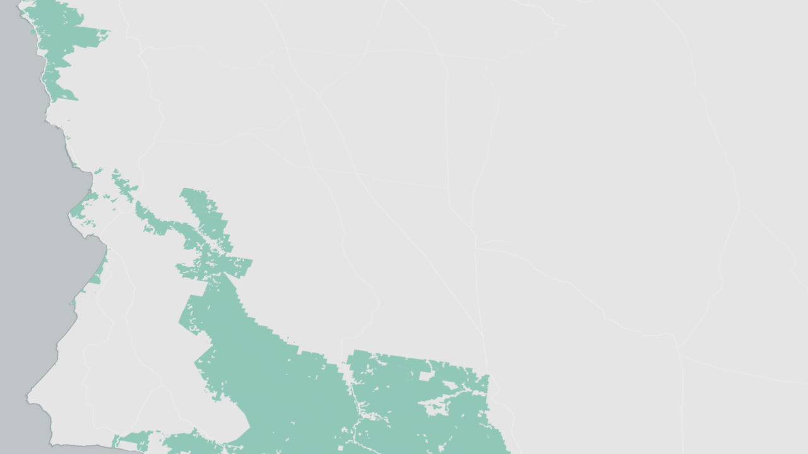
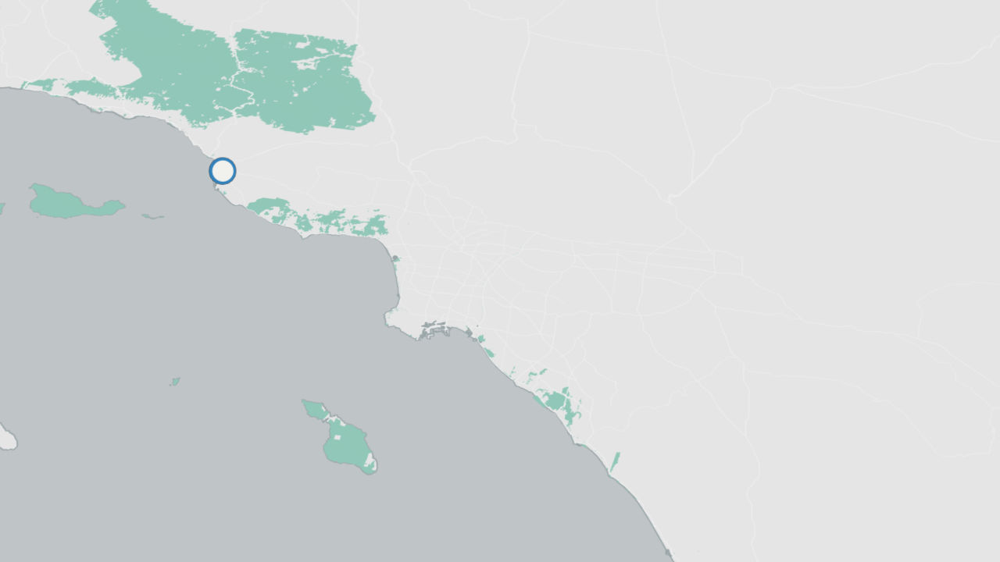
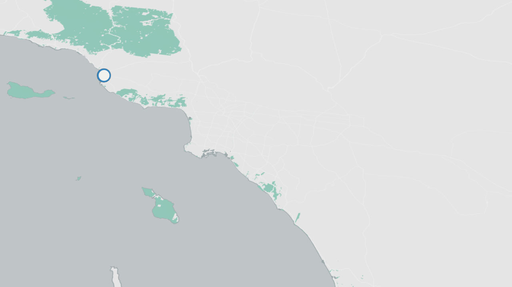
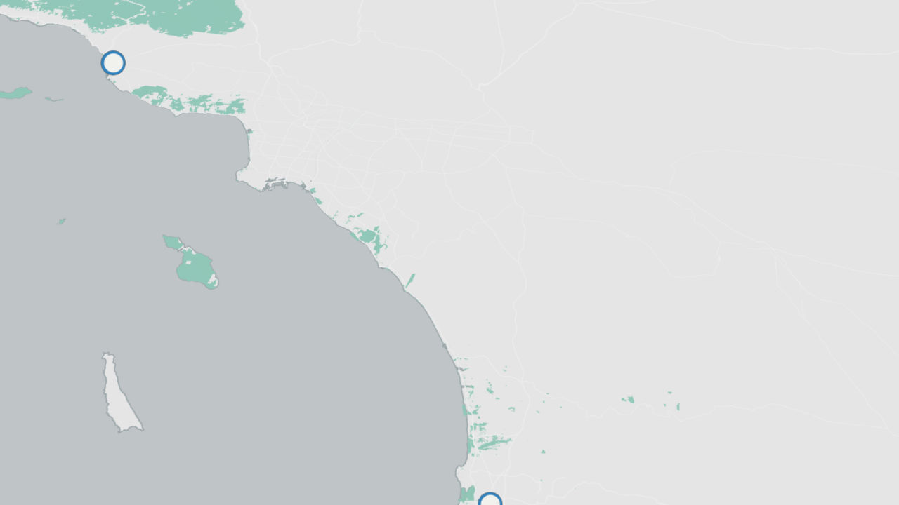
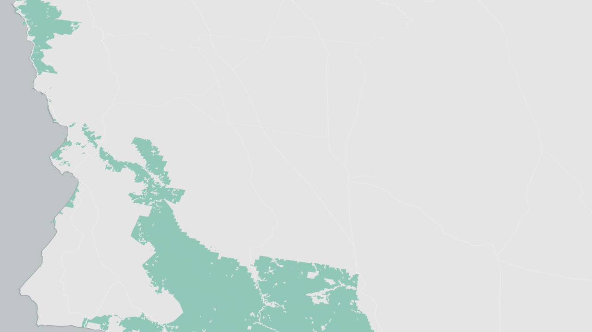
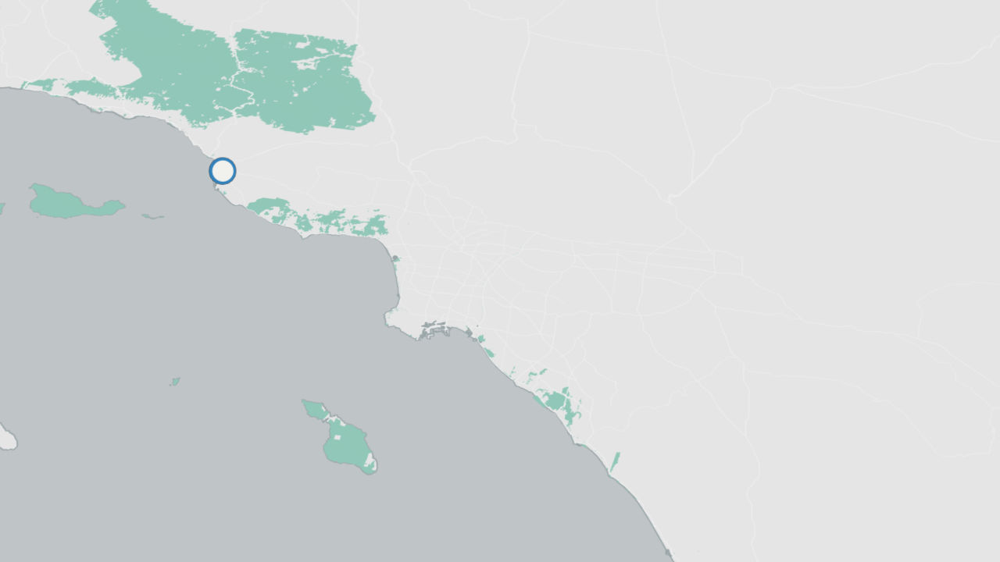
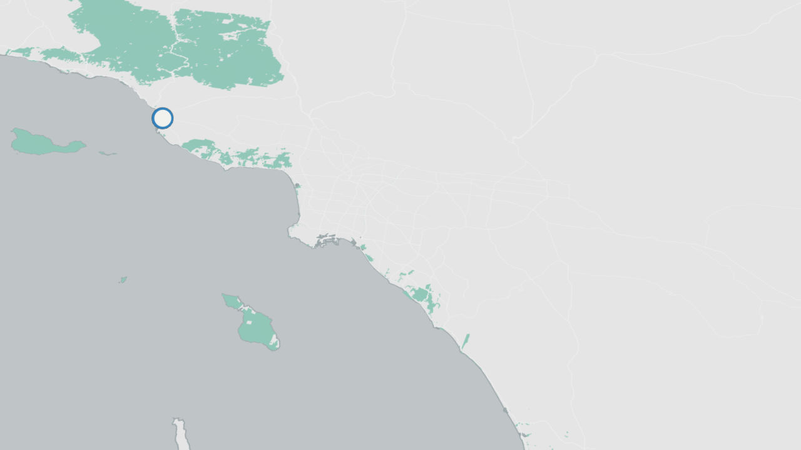
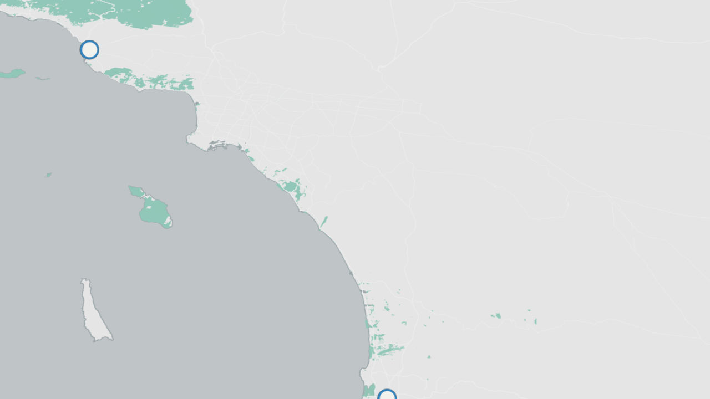
 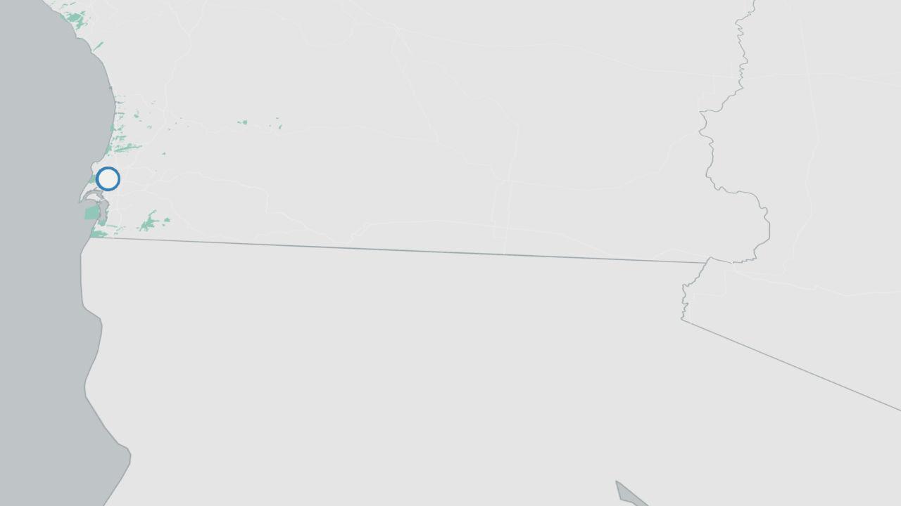
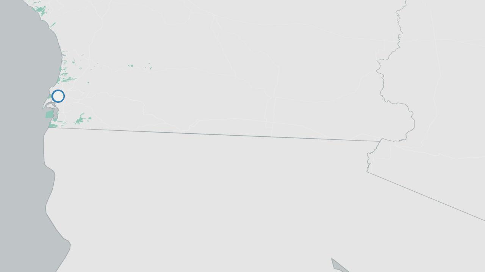
Brown Girl Surf (Oakland)
Brown Girl Surf has connected 131 girls from Oakland, San Francisco, and the South Bay to the coast and ocean through surfing in the last two years. Many of them had never visited the coast, despite living nearby. The program shows girls "that the ocean is not someone else's place," says Mira Manickam-Shirley. "It's theirs. And they have a way to access it, to see themselves reflected there, and enjoy it."
CAUSE (Oxnard)
CAUSEóthe Central Coast Alliance United for a Sustainable Economyóis a grassroots organization that works to empower communities where all can contribute to, and benefit from, a sustainable economy that is just, prosperous, and environmentally healthy. CAUSE advocates that access to the coast for low-income communities is a crucial part of this bigger picture.
Outdoor Outreach (San Diego)
Outdoor Outreach has brought more than 9,000 youth into the outdoors in San Diego since its founding in 1999. Many participants come from low-income communities, and have few opportunities to experience natural parks and open-space areas before joining the programs.
Addressing the Next Generation of Coastal Access Issues
From the last hundred yards to access for all
The California coast and beaches are among our state's most important democratic spaces. Despite our differences, we all share a love of the coast and many of the same desires and reasons for coming to the beach. Under our state constitution and the California Coastal Act, our beaches belong to all of us. We need to make sure they are accessible to everyone.
Today's coastal access challenges will only be solved by collaborations among many institutions and groups. They can't be solved by the California Coastal Commission and Coastal Conservancy alone, although they could help to lead, inspire, and support many of the necessary solutions. To address the next generation of challenges to providing coastal access for all, we offer the following recommendations.
-
Focus legislative and executive branch attention on the coast.
Today's coastal access challenges are complicated and daunting. They will not be met without sustained, focused attention from the California Legislature and the executive branch of state government. Most importantly, California's leaders should understand that the coast is home to some of California's most valued public parks and open spacesóincluding the beach itselfóand that millions of Californians of all backgrounds visit the coast each year, many from hours away. Elected officials have the power to appoint individuals to the Coastal Commission and other agencies who will shape the future of the California Coast. They should ensure that those appointees understand these next-generation access challenges and opportunities, as well as their responsibility to protect our coast and beaches for the benefit of all. The Coastal Commission and Coastal Conservancy cannot do this alone. Other partners, such as State Parks (the manager of a vast portion of California's coastline), local governments and agencies, the private sector, nonprofits, and philanthropies, will also have important roles to play.
-
Change the narrative of access.
For the first forty years of the coastal act, access has largely been understood as the availability of direct pathways to and along our publicly owned tidelands and beaches, with secondary attention paid to the protection and provision of affordable recreational and overnight stay opportunities. The principal challenge continues to be seen as private landowners blocking that access. The Coastal Commission and others with coastal management responsibilities should remain vigilant in protecting public access in this form. But the next generation of challenges will be more complex and require collaboration with many other players, from leaders in coastal and inland communities, to the private sector, government agencies, nonprofits, and philanthropy, as well as the governor and legislators. The Coastal Commission and Conservancy should focus communication efforts on telling that story and on building effective partnerships in the coming years.
-
Solve the perceived parking problem.
Parking is perceived as a problem everywhere. It is an everyday annoyance. We found little meaningful variation in that perception or in Californians' willingness to pay for parking, even in areas where public debates about parking on the coast have erupted. At the same time, parking fees can help to pay for needed amenities and resources that enhance our experience of the coast. Increasing predictability in parking fees across regions of the state, and helping Californians understand what their parking fees pay for, could help greatly, so that people know what they should expect to pay and why, and so that coastal managers can focus on other problems.
-
Ensure an adequate supply of lower cost overnight accommodations on the coast.
Solving this barrier to access is key to providing access to the coast for many Californians. It cannot be solved by the Coastal Commission and Conservancy alone, but they can and should lead the effort. The Coastal Commission is embarking on an effort to develop standards and policies for maintaining the existing supply of lower cost overnight accommodations on the coast. With the Coastal Conservancy as a non-regulatory partner, along with other key partners such as State Parks, local park and open space agencies, and local governments, the commission can help to stop the decline in the supply of lower cost accommodations and increase that supply over time. Those efforts should be made a high priority and given adequate support to succeed. Solving this barrier to access is key to providing access to the coast for many Californians. It cannot be solved by the Coastal Commission alone, but the commission should lead the effort.
-
Enhance options for getting to the beach using public transportation.
This doesn't necessarily require constructing new “subways to the sea,” although extension of the Metro Expo Line to Santa Monica Beach in summer 2016 did demonstrate that there is pent up demand. Low-cost express buses to the beach from inland communities in the San Fernando Valley have long been popular on summer weekends in Los Angeles. We need more experiments like that to test demand for economical solutions in addition to expanding existing services. The last quarter-mile to the beach is also crucial. People do not want to walk more than a few blocks when they get to the coast, especially if they are loaded down with gear to enjoy a day at the beach with their families.
-
Support groups changing the culture of access to the coast.
Dozens of groups up and down the coast and throughout California are working in a variety of creative ways to deepen the ties of diverse Californians to our coast and beaches. Groups such as Brown Girl Surf in Northern California and Outdoor Outreach in San Diego bring young people to the beach for the first time, many of whom live near the coast, but have never been to the ocean. Groups such as the Central Coast Alliance United for a Sustainable Economy (CAUSE) are working to ensure that low-income communities have the same ability to enjoy our ocean and beaches as more wealthy coastal communities. There are many other nonprofit groups and some parks and recreation agencies doing similar work in coastal and inland communities, and more are emerging all the time. These organizations depend on philanthropic and public funding for outdoor education and recreation programs. These programs need to expand beyond coastal communities and counties to help inland communities, particularly young people living there, gain access to and experience the California coast. The future of California's passion for protecting and enjoying our coast and ocean will depend on them.